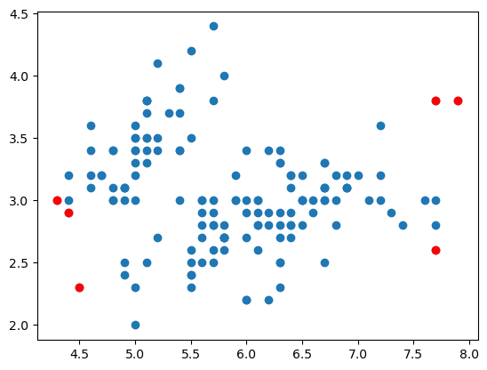
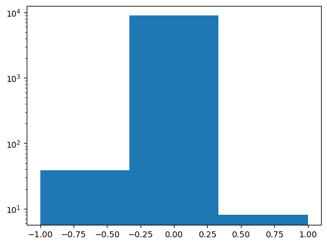
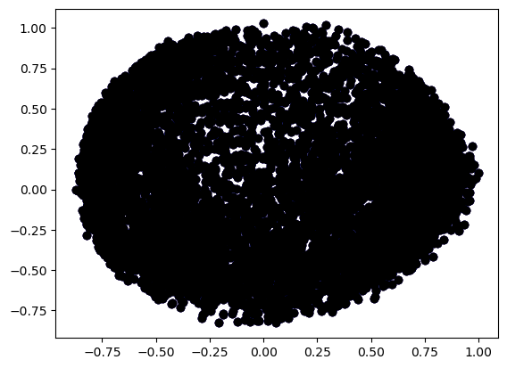
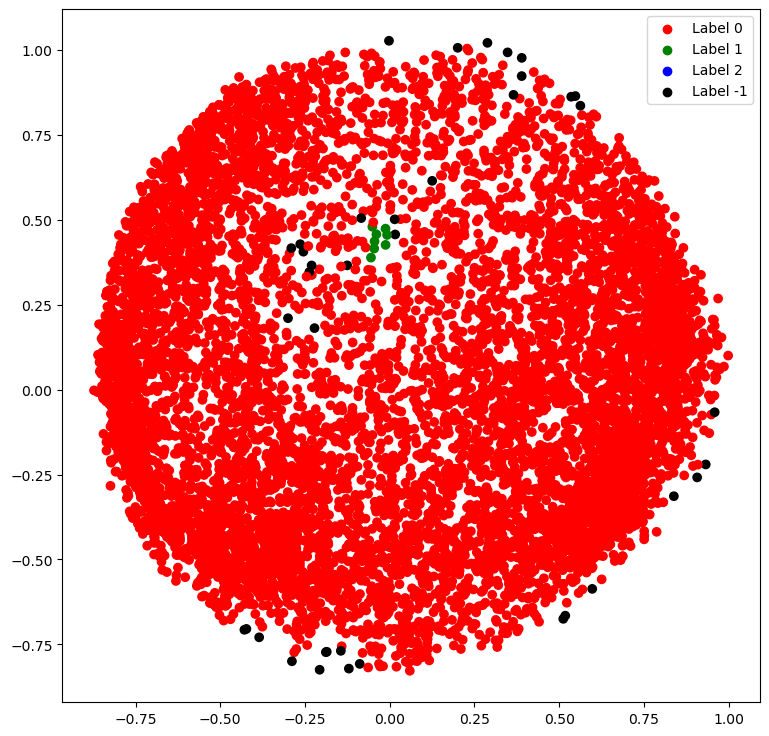

import numpy as np
import pandas as pd
import matplotlib.pyplot as plt
from sklearn.svm import OneClassSVM
Anomaly (or outlier) detection is the data-driven task of identifying these rare occurrences and filtering or modulating them from the analysis pipeline. Such anomalous events can be connected to some fault in the data source, such as financial fraud, equipment fault, or irregularities in time series analysisAnomaly detection is an important task in machine learning, and various techniques can be employed depending on the nature of the data and the availability of labeled examples. data = pd.read_csv("./iris.csv")
df = data[["sepal_length", "sepal_width"]]
print(df.describe()) sepal_length sepal_width
count 150.000000 150.000000
mean 5.843333 3.054000
std 0.828066 0.433594
min 4.300000 2.000000
25% 5.100000 2.800000
50% 5.800000 3.000000
75% 6.400000 3.300000
max 7.900000 4.400000Predicted outliers from this data:
model = OneClassSVM(kernel = 'rbf' , gamma = 0.001, nu = 0.05).fit(df)
y_pred = model.predict(df)anomaly_values = df.iloc[np.where(y_pred == -1)]
print(anomaly_values) sepal_length sepal_width
8 4.4 2.9
13 4.3 3.0
41 4.5 2.3
117 7.7 3.8
118 7.7 2.6
131 7.9 3.8plt.scatter(df["sepal_length"], df["sepal_width"])
plt.scatter(anomaly_values["sepal_length"], anomaly_values["sepal_width"], c = "r")<matplotlib.collections.PathCollection at 0x266e0e53710>
plt.scatter(df["sepal_length"], df["sepal_width"])
plt.scatter(anomaly_values["sepal_length"], anomaly_values["sepal_width"], c = "r") <matplotlib.collections.PathCollection at 0x266e0ecf650>Anomaly Detection for Credit Card Dataset
import numpy as np
import pandas as pd
import matplotlib.pyplot as plt
from sklearn.cluster import DBSCAN
from sklearn.preprocessing import StandardScaler
from sklearn.preprocessing import normalize
from sklearn.decomposition import PCAX = pd.read_csv(".//CC GENERAL.csv")
X = X.drop('CUST_ID', axis = 1)
X.fillna(method = 'ffill', inplace = True)
print(X.head()) BALANCE BALANCE_FREQUENCY PURCHASES ONEOFF_PURCHASES \
0 40.900749 0.818182 95.40 0.00
1 3202.467416 0.909091 0.00 0.00
2 2495.148862 1.000000 773.17 773.17
3 1666.670542 0.636364 1499.00 1499.00
4 817.714335 1.000000 16.00 16.00
INSTALLMENTS_PURCHASES CASH_ADVANCE PURCHASES_FREQUENCY \
0 95.4 0.000000 0.166667
1 0.0 6442.945483 0.000000
2 0.0 0.000000 1.000000
3 0.0 205.788017 0.083333
4 0.0 0.000000 0.083333
ONEOFF_PURCHASES_FREQUENCY PURCHASES_INSTALLMENTS_FREQUENCY \
0 0.000000 0.083333
1 0.000000 0.000000
2 1.000000 0.000000
3 0.083333 0.000000
4 0.083333 0.000000
CASH_ADVANCE_FREQUENCY CASH_ADVANCE_TRX PURCHASES_TRX CREDIT_LIMIT \
0 0.000000 0 2 1000.0
1 0.250000 4 0 7000.0
2 0.000000 0 12 7500.0
3 0.083333 1 1 7500.0
4 0.000000 0 1 1200.0
PAYMENTS MINIMUM_PAYMENTS PRC_FULL_PAYMENT TENURE
0 201.802084 139.509787 0.000000 12
1 4103.032597 1072.340217 0.222222 12
2 622.066742 627.284787 0.000000 12
3 0.000000 627.284787 0.000000 12
4 678.334763 244.791237 0.000000 12 print(X.columns)
print(f"number of rows: {len(X)}")Index(['BALANCE', 'BALANCE_FREQUENCY', 'PURCHASES', 'ONEOFF_PURCHASES',
'INSTALLMENTS_PURCHASES', 'CASH_ADVANCE', 'PURCHASES_FREQUENCY',
'ONEOFF_PURCHASES_FREQUENCY', 'PURCHASES_INSTALLMENTS_FREQUENCY',
'CASH_ADVANCE_FREQUENCY', 'CASH_ADVANCE_TRX', 'PURCHASES_TRX',
'CREDIT_LIMIT', 'PAYMENTS', 'MINIMUM_PAYMENTS', 'PRC_FULL_PAYMENT',
'TENURE'],
dtype='object')
number of rows: 8950X.describe()| BALANCE | BALANCE_FREQUENCY | PURCHASES | ONEOFF_PURCHASES | INSTALLMENTS_PURCHASES | CASH_ADVANCE | PURCHASES_FREQUENCY | ONEOFF_PURCHASES_FREQUENCY | PURCHASES_INSTALLMENTS_FREQUENCY | CASH_ADVANCE_FREQUENCY | CASH_ADVANCE_TRX | PURCHASES_TRX | CREDIT_LIMIT | PAYMENTS | MINIMUM_PAYMENTS | PRC_FULL_PAYMENT | TENURE | |
|---|---|---|---|---|---|---|---|---|---|---|---|---|---|---|---|---|---|
| count | 8950.000000 | 8950.000000 | 8950.000000 | 8950.000000 | 8950.000000 | 8950.000000 | 8950.000000 | 8950.000000 | 8950.000000 | 8950.000000 | 8950.000000 | 8950.000000 | 8950.000000 | 8950.000000 | 8950.000000 | 8950.000000 | 8950.000000 |
| mean | 1564.474828 | 0.877271 | 1003.204834 | 592.437371 | 411.067645 | 978.871112 | 0.490351 | 0.202458 | 0.364437 | 0.135144 | 3.248827 | 14.709832 | 4494.394205 | 1733.143852 | 865.225790 | 0.153715 | 11.517318 |
| std | 2081.531879 | 0.236904 | 2136.634782 | 1659.887917 | 904.338115 | 2097.163877 | 0.401371 | 0.298336 | 0.397448 | 0.200121 | 6.824647 | 24.857649 | 3638.616165 | 2895.063757 | 2376.929826 | 0.292499 | 1.338331 |
| min | 0.000000 | 0.000000 | 0.000000 | 0.000000 | 0.000000 | 0.000000 | 0.000000 | 0.000000 | 0.000000 | 0.000000 | 0.000000 | 0.000000 | 50.000000 | 0.000000 | 0.019163 | 0.000000 | 6.000000 |
| 25% | 128.281915 | 0.888889 | 39.635000 | 0.000000 | 0.000000 | 0.000000 | 0.083333 | 0.000000 | 0.000000 | 0.000000 | 0.000000 | 1.000000 | 1600.000000 | 383.276166 | 169.488256 | 0.000000 | 12.000000 |
| 50% | 873.385231 | 1.000000 | 361.280000 | 38.000000 | 89.000000 | 0.000000 | 0.500000 | 0.083333 | 0.166667 | 0.000000 | 0.000000 | 7.000000 | 3000.000000 | 856.901546 | 312.096808 | 0.000000 | 12.000000 |
| 75% | 2054.140036 | 1.000000 | 1110.130000 | 577.405000 | 468.637500 | 1113.821139 | 0.916667 | 0.300000 | 0.750000 | 0.222222 | 4.000000 | 17.000000 | 6500.000000 | 1901.134317 | 815.375602 | 0.142857 | 12.000000 |
| max | 19043.138560 | 1.000000 | 49039.570000 | 40761.250000 | 22500.000000 | 47137.211760 | 1.000000 | 1.000000 | 1.000000 | 1.500000 | 123.000000 | 358.000000 | 30000.000000 | 50721.483360 | 76406.207520 | 1.000000 | 12.000000 |
scaler = StandardScaler()
X_s = scaler.fit_transform(X)
X_norm = pd.DataFrame(normalize(X_s))pca = PCA(n_components = 2)
X_reduce = pca.fit_transform(X_norm)
X_reduce = pd.DataFrame(X_reduce)
X_reduce.columns = list([f'P{i}' for i in range(1, len(X_reduce.columns)+1)])
db_model = DBSCAN(eps = 0.05, min_samples = 10).fit(X_reduce)
labels = db_model.labels_np.unique(labels)array([-1, 0, 1], dtype=int64)np.histogram(labels, bins=len(np.unique(labels)))(array([ 39, 8903, 8], dtype=int64),
array([-1. , -0.33333333, 0.33333333, 1. ]))plt.hist(labels, bins=len(np.unique(labels)), log=True)
plt.show()
n_clusters = len(np.unique(labels))-1
anomaly = list(labels).count(-1)
print(f'Clusters: {n_clusters}')
print(f'Abnormal points: {anomaly}')Clusters: 2
Abnormal points: 39X_anomaly = X.iloc[np.argwhere(labels==-1).reshape((-1,))]
print(X_anomaly.head()) BALANCE BALANCE_FREQUENCY PURCHASES ONEOFF_PURCHASES \
86 7069.950386 1.0 1603.78 1445.14
87 8181.251131 1.0 2258.01 1318.78
109 6644.201651 1.0 4478.75 2721.59
120 8504.876253 1.0 6724.26 4100.08
468 6426.639738 1.0 4462.86 2816.46
INSTALLMENTS_PURCHASES CASH_ADVANCE PURCHASES_FREQUENCY \
86 158.64 5626.004046 1.0
87 939.23 5251.228934 1.0
109 1757.16 7205.520805 1.0
120 2624.18 1686.599777 1.0
468 1646.40 4599.625146 1.0
ONEOFF_PURCHASES_FREQUENCY PURCHASES_INSTALLMENTS_FREQUENCY \
86 0.833333 1.000000
87 0.750000 1.000000
109 0.916667 1.000000
120 0.916667 1.000000
468 0.833333 0.916667
CASH_ADVANCE_FREQUENCY CASH_ADVANCE_TRX PURCHASES_TRX CREDIT_LIMIT \
86 0.750000 23 23 11000.0
87 0.750000 21 60 13500.0
109 0.583333 21 64 9000.0
120 0.500000 10 85 17000.0
468 0.333333 11 103 11800.0
PAYMENTS MINIMUM_PAYMENTS PRC_FULL_PAYMENT TENURE
86 4589.873897 1876.262988 0.000000 12
87 3021.575846 2074.581541 0.000000 12
109 10857.943210 2469.571326 0.083333 12
120 1888.756861 2167.446204 0.000000 12
468 1793.043228 3101.017030 0.000000 12 colours = {}
colours[0] = 'r'
colours[1] = 'g'
colours[2] = 'b'
colours[-1] = 'k'
cvec = [colours[label] for label in labels]
r = plt.scatter(X_reduce['P1'], X_reduce['P2'], color ='r');
g = plt.scatter(X_reduce['P1'], X_reduce['P2'], color ='g');
b = plt.scatter(X_reduce['P1'], X_reduce['P2'], color ='b');
k = plt.scatter(X_reduce['P1'], X_reduce['P2'], color ='k');
plt.figure(figsize =(9, 9))
plt.scatter(X_reduce['P1'], X_reduce['P2'], c = cvec)
plt.legend((r, g, b, k), ('Label 0', 'Label 1', 'Label 2', 'Label -1'))
plt.show()
